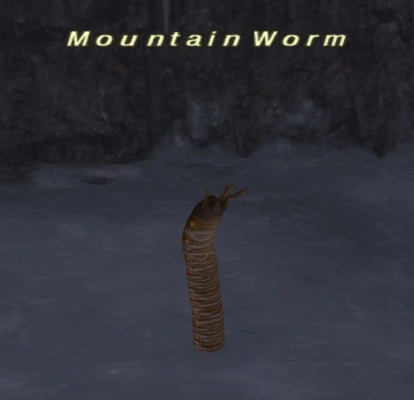

Level 75 reference · Zenith rules
|
Job: Black Mage Normal and Notorious Monster mobs |
 Image source |


|
Zone |
Level |
Drops |
Steal |
Spawns |
Notes |
|
66-70 |
17 |
L, H | |||
|
73 |
1 |
L, H | |||
|
HP = Detects Low HP; M = Detects Magic; Sc = Follows by Scent; T(S) = True-sight; T(H) = True-hearing JA = Detects job abilities; WS = Detects weaponskills; Z(D) = Asleep in Daytime; Z(N) = Asleep at Nighttime | |||||
Notes (for NM):
- NM spawns in the cave around F-8 to F-9 approximately every 21 hours. The NM is a gray colored model, while the regular one is normal tan color. Both versions carry the same name and are only separated by their physical color.
- Killable by: 2 characters level 73+
- Special Attacks: Auto Regen (around 100HP every 3 seconds!), Stonega III
Adapted from Eden Wiki: Mountain Worm · Contributors and history · CC BY-SA 4.0. Revision 1833. Layout, links and optional background text adapted for Zenith.